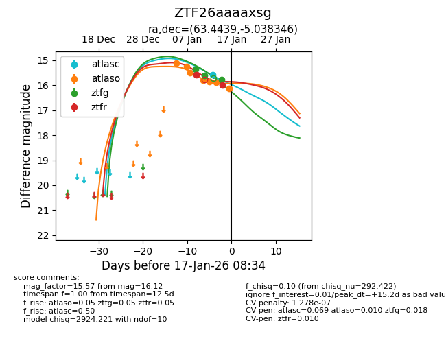
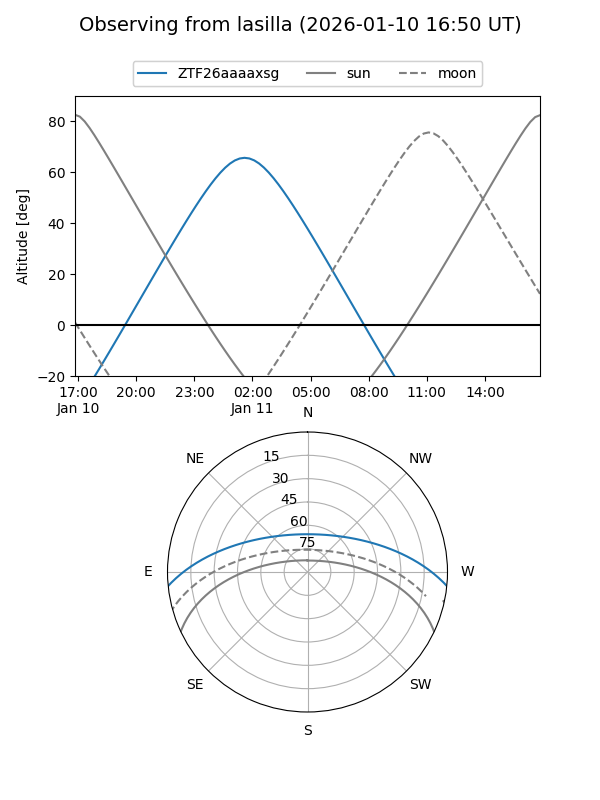
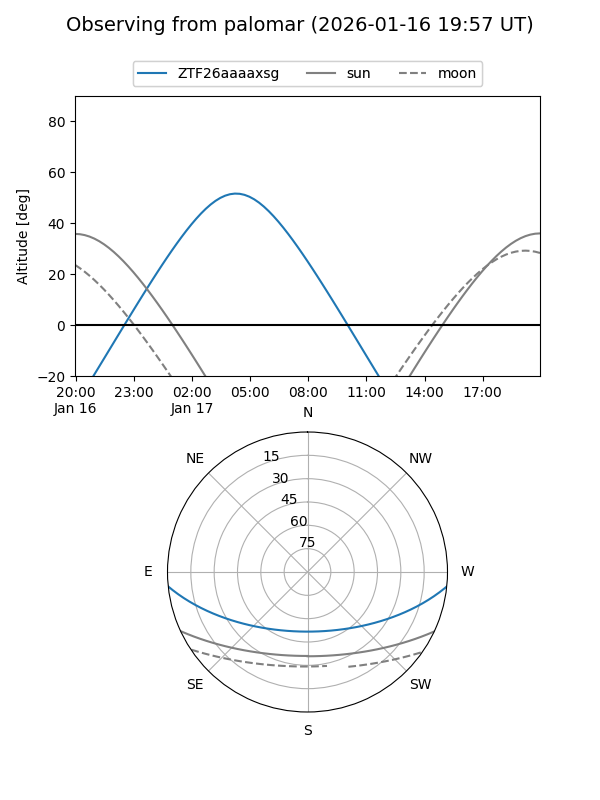

ZTF26aaaaxsg
Target ZTF26aaaaxsg at 2026-01-15 08:26
Aliases and brokers:
FINK: link
Lasair: link
ALeRCE: link
alt names
ZTF26aaaaxsg (ztf,fink_ztf)
Coordinates:
equatorial (ra, dec) = 63.4439,-5.03835
equatorial (HMS+DMS) = 04:13:46.54,-05:02:18.04
galactic (l, b) = (197.6520,-37.08157)
Flags:
likely cv
Photometry:
last atlasc=15.59, atlaso=15.88, ztfg=15.60, ztfr=15.59
1 atlasc, 6 atlaso, 2 ztfg, 1 ztfr detections
Lightcurve

Visibility


Additional plots